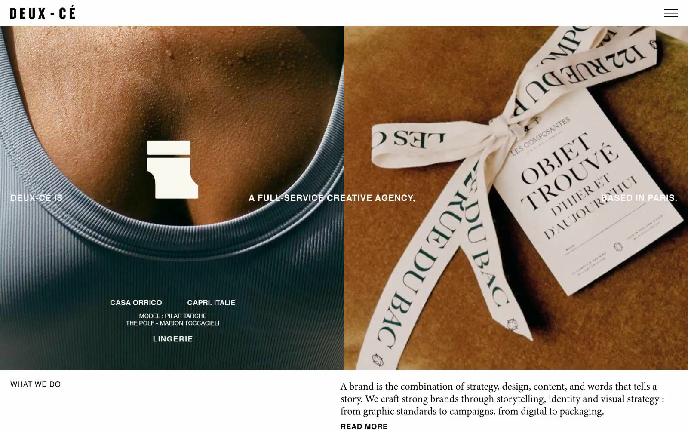

Atelier Deux-Cé 的 Design.md 主题展示，围绕编辑/机构、浅色界面、高级质感组织页面。
Explore Atelier Deux-Cé's light Agency design system: Midnight #000000, Canvas #ffffff colors, Helvetica, minion-3 typography, and DESIGN.md for AI agents.

#d8ddc6: #d8ddc6#000000: #000000#ffffff: #ffffff#9c978a: #9c978a#aaaaa4: #aaaaa4#259558: #259558#d8d0c5: #d8d0c5#afb371: #afb371#683e28: #683e28#8b8c7d: #8b8c7d#eee5da: #eee5da#b2a895: #b2a895display: Interbody: Intermono: ui-monospacehints: Inter,ui-monospace